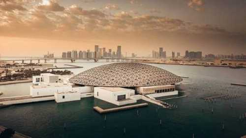
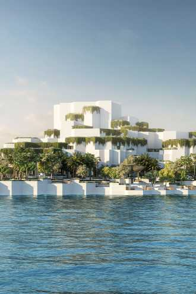
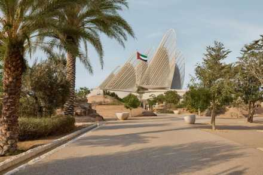

Explore Abu Dhabi
A sneek peek on the United Arab Emirate's incredible sites.

As the first universal museum in the Arab world, Louvre Abu Dhabi is a brilliant celebration of human creativity that bridges Eastern and Western art. Rather than separating artifacts by geography, its unique chronological galleries display works from different civilizations side-by-side, revealing the shared threads and cultural exchanges that have connected humanity across millennia.

The Natural History Museum Abu Dhabi takes visitors on an awe-inspiring journey through 13.8 billion years of cosmic and terrestrial history. As the largest institution of its kind in the region, the museum chronicles the universe's timeline from the dramatic flash of the Big Bang, through the fiery formation of Earth, and into the delicate ecosystems of our modern world.

Serving as the premier cultural crown of the United Arab Emirates, the Zayed National Museum honors the life, legacy, and values of the nation’s Founding Father, the late Sheikh Zayed bin Sultan Al Nahyan. The museum spans 300,000 years of regional history, tracing the incredible human journey from ancient stone tools and historic pearl-diving traditions up to the unification of the modern Emirates.